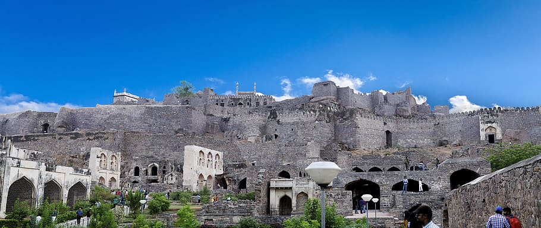

Golconda
Location:Hyderabad, Telangana
Description:A citadel and fort located in Southern India that was the capital of the medieval sultanate of the Qutb Shahi dynasty.
Adiyogi statue

Location:Thirunamam at Coimbatore, Tamil Nadu.
Description:A 112-foot-tall statue of the Hindu deity Shiva located at the Isha Yoga Center that represents the first yogi or Adiyogi
Red Fort

Location:Delhi
Description:A historic fort in the city of Delhi that served as the main residence of the emperors of the Mughal dynasty for nearly 200 years.
Golden Temple

Location:Amritsar, Punjab
Description:A Gurdwara located in the city of Amritsar that is considered one of the holiest places for Sikhs.
Howrah Bridge: One of the Busiest Bridge route in the world

Location:Kolkata, West Bengal
Description:A cantilever bridge with a suspended span over the Hooghly River that is one of the busiest bridges in the world.
India Gate

Location: New Delhi
Description:A war memorial located astride the Rajpath that is dedicated to honor the soldiers of the Indian Army who died in World War I and the Third Anglo-Afghan War.